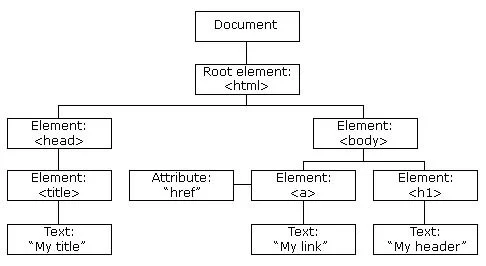

Resposta: O DOM é uma interface de programação utilizada pelos navegadores para representar as páginas que encontramos na rede. Ele oferece uma representação estruturada para documentos HTML, XML e SVG, basicamente ele organiza os elementos do documento de forma hierarquica. Então a relação que o DOM tem com o HTML é que ele organiza os elementos do html de forma semelhante a uma arvore genealogica

Resposta: um nó (node) é basicamente uma tag como div, p, h1. Os nó de elemento sãp as próprias tag HTML, eles determinam a estrutura da página, eles sao as tags como p, div, h1, img. Os nó de atributos são as caracteristicas das tags de elemento. Como id e class. Os nó de texto é o texto puro que fica dentro do nó de elemento, e ele nao pode conter outros nós. Um exemplo é "Olá Mundo!", que é um nó de texto
O método getElementById() pega o elemento documento pelo id dele, pelo nome dele, exemplo: let titulo = document.getElementById('titulo-principal'). O método querySelector() usa as mesmas regras do CSS para buscar o elemnento do documento, exemplo: let primeiroTexto = document.querySelector('.paragrafo'). Já o método querySelectorAll() devolve uma lista (parecida com um Array) contendo todos os elementos que combinam com a busca do elemento no documento, exemplo: let todosOsTextos = document.querySelectorAll('.paragrafo');
Resposta: o innerHTML lê e entende tags HTML já o innerText lê apenas texto puro (e ignora/transforma as tags). ao usar o innerHTML e colocar tags HTML dentro da sua frase, o navegador vai entender essas tags e aplicar o visual delas. Ele altera a estrutura do DOM. Já o innerText não se importa com o HTML. Ele pega o que você escreveu e joga na tela exatamente como texto. Ele não cria novos "nós de elemento" (tags), apenas "nós de texto".
Um evento é, basicamente, um sinal de que "algo aconteceu" na página. O navegador fica "ouvindo" esses sinais e, quando eles ocorrem, o JavaScript pode reagir a eles executando uma função. O onclick é um evento que ocorre quando o usuário clica com o mouse em um elemento (geralmente um botão ou link). Já o onchange é um evento que acontece quando o valor de um elemento é alterado e o usuário termina a interação (geralmente tirando o foco do campo). E o onmouseover é o evento que acontece quando o ponteiro do mouse passa por cima de um elemento. É como um "sensor de presença".
texto original